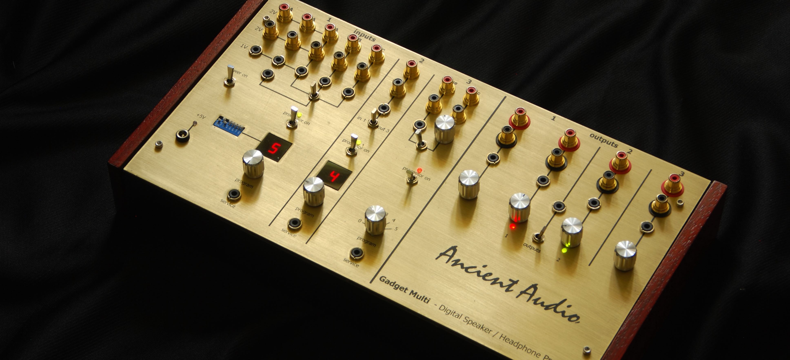

Gadget Multi
Digital Speaker Processor is powerful tool to improve sound of any audio system.
Sometime, these systems are complex, consists of many speakers, many listennig zones. It is need to conenct many signal sources, with different signal level, different sockets, differnt signal path. A good example is sound system of bus, restaurant, camper hall, multiroom, yacht So,it is need to create custom device, consists of many inputs, outputs, processors, with easy switching programs. Device must be custom tailored to customer needs. This is Gadget Multi. Presented model is just example of unique device features.
Technical Specification:
- 3 processors
- 6 line inputs RCA, 2 Vrms
- 6 minijack inputs, 1 Vrms
- 4 RCA outputs, variable , 0-2 Vrms
- 4 minijack outputs, variable, 0-2Vrms, high current, to drive 32-600 Ohm headphones too
- 2 rotary program selectors, with led number display
- 256 bit binary code program selector
- low noise microphone amplifier, biased for condenser electret microphone
- remote switching outputs - battery power supply for 6 hours of operation
- dimensions 360 x 200 x 70 mm